1Introduction
Functional Description
The SAMmobile 150-D is a spectroscopic mobile radiation detection system, developed for a vehicle, boat, and aircraft use. The unit includes up to two 2x4x16 (or 4x4x16) inch NaI(Tl) detectors and optional He-3 or tileable, solid-state neutron detectors. The standard configuration places the detector(s) and electronics in a water and shock resistant, reinforced case. Other configurations are available according to specific requirements.
The unit can be deployed in a trunk, on a truck bed, or on a boat deck in a "Load and Go" fashion, while wirelessly reporting events on a separate display. It can also be used as a temporary portal for pedestrian or vehicle screening.
The default User Interface software for the SAMmobile 150-D is PeakGo-D for Windows-based tablets. As an alternative, the use of SAM III PeakAbout-D app for Smartphones is also possible. Both easy-to-use apps conveniently display isotope names, isotope classifications, color-coded energy peaks, and bar graphs. The rich feature-set in PeakAbout-D and PeakGo-D include GPS tagging, attachment of photo/video images, pop-up isotope help, and immediate 'Push-to-Reach-Back' functionality.
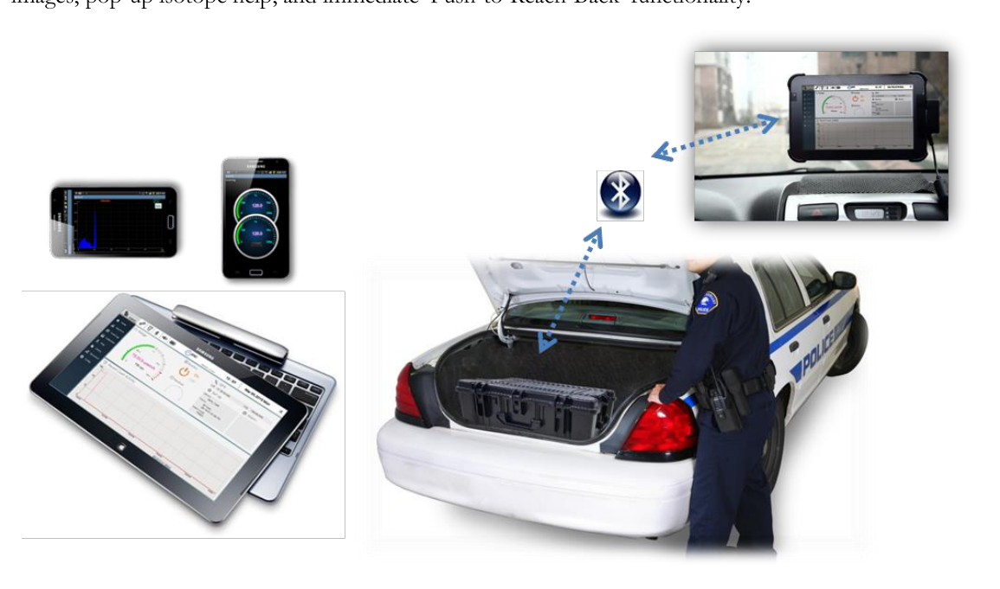
Important Safety Information
The SAMmobile 150-D has been meticulously engineered to provide safe and dependable high performance for years to come. But, as with any form of electrical equipment, following instructions and taking basic precautions will prevent injury to the operator, or damage to the equipment. Therefore, before using this equipment, the following precautions should be observed:
- Read and understand this manual thoroughly.
- Store all provided documents in a safe place for future reference.
- Be especially sure to read the "SAFETY" chapter of this manual, and thoroughly understand all warning and caution labels.
Product Warranty
Description of the Berkeley Nucleonics Corp. warranty for the SAMmobile 150-D VMRDS (Vehicle Mounted Radiation Detection System):
- The unit is warranted to be free of defects in material and artistry, including parts, labor, and all unit elements.
- Warranty is 1 Year standard, unless otherwise specified. Materials and workmanship, return to manufacturer included.
2Safety
Cautions and Notes
The following warnings and instructions are vital for the proper operation of the SAMmobile 150-D unit and should be made readily accessible for reference. Follow these warnings and instructions thoroughly to use the unit correctly and to protect the safety of the operator.
Handling Instructions
- Qualified/trained personnel should handle the maintenance service of the unit.
Safety Hazard Warnings
Disposal Instructions
- If/when disposing of the unit: observe local and national regulations for the disposal of units containing lead.
- If/when disposing of the unit: observe local and national regulations for the disposal of units containing a lithium battery.
- Do not use household or municipal waste collection services for the disposal of electrical and electronic equipment. EU countries require the use of separate recycling collection services.
Classification
- EMC: Comply with EN 61326-1:2006, EN 301 489-1 V1.9.2 and EN 301 489-17 V2.2.1.
- FCC Class: Class B Equipment (FCC CFR 47 part 15 subpart B, Section 15.101).
- Degree of protection against electric shock: Type BF Applied Part.
- Degree of protection against the ingress of water: IP65.
- Equipment not suitable for use in the presence of a flammable anesthetic mixture with air or with oxygen or nitrous oxide.
Labels
The location of the label providing the system power requirements and a serial number of the system is on the side of the carrying case.
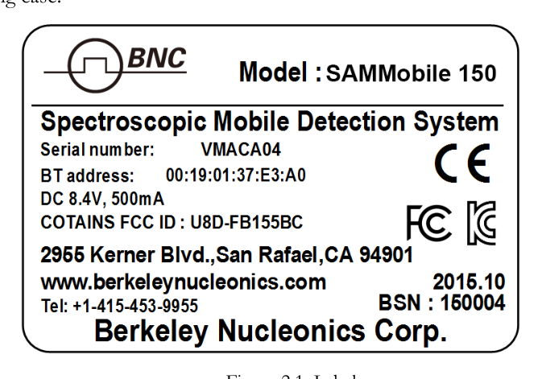
3System Description
150-D System Components
SAMmobile 150-D components, accessories, and carrying case are shown in Figure 3.1. Depending on which model is purchased, two possible sizes of carrying case are provided.
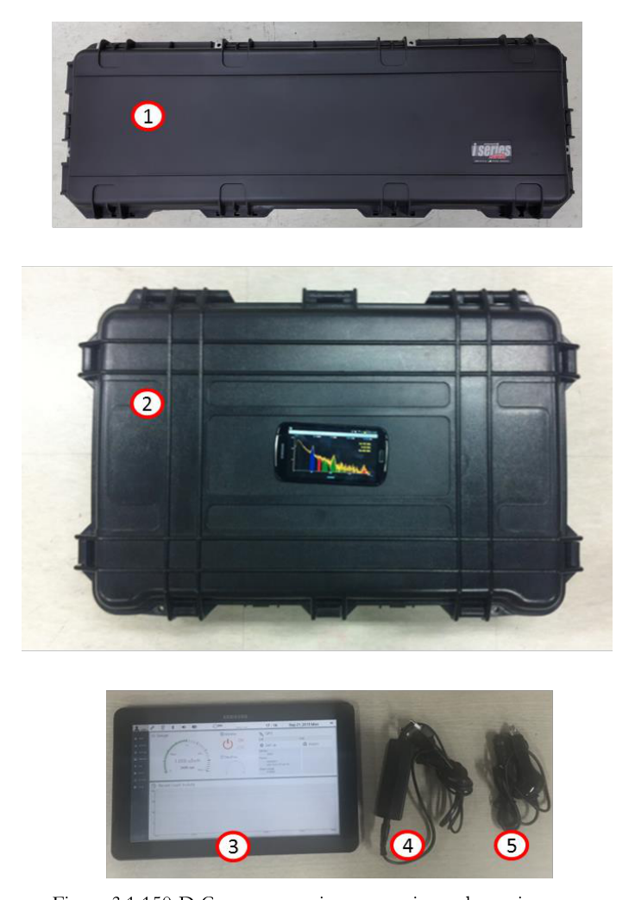
- SAMmobile 150-D detector (150-D-2G1 or 4G1 model: one detector per case)
- SAMmobile 150-D detector (150-D-2G2 or 4G2 model: two detectors per case)
- Tablet PC with application SW PeakGo-D loaded
- DC power adaptor for SAMmobile 150-D
- 12 V adaptor for vehicle electrical system
Power and Battery Charge Guide
Figure 3.2 shows the location of the power switch and the DC connector for charging the internal battery. The LED in the power switch turns red when the switch is turned ON. The battery charger has a built-in overcharging protection circuit. Once the battery is fully charged, the LED on the battery charger turns green, and auto-charge termination is activated.
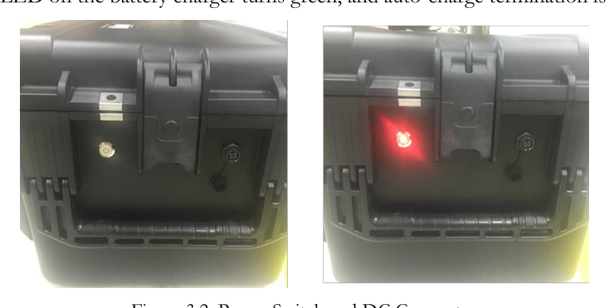
SAMmobile 150-D can also be charged by standard 12 V DC vehicle electric system. The SAMmobile 150-D is equipped with a Lithium-Ion battery. The battery has a built-in power protection circuit (PCM) which prevents the battery from both overcharging and over-discharging.
SAMmobile 150-D Software
The SAMmobile 150-D software includes:
- SAM III PeakGo-D: default application software for the Tablet PC.
- SAM III PeakGo-D Adaptor: adaptor SW between PeakGo-D application SW and SAMmobile 150-D units via Bluetooth connection.
The Tablet PC application software is preinstalled in the provided Tablet PC. PeakGo-D software is used in the configuration and calibration procedures, as well as for the real-time measurement and analysis of spectral data acquired by the SAMmobile 150-D. The Tablet PC also supports Event Log file management, integration of data from multiple units, and data backup. For detailed installation instructions, please refer to the appropriate sections in this manual.
Prerequisites for the Operation of the SAMmobile 150-D
Charge the SAMmobile 150-D battery
- Turn off the system (recommended for fastest time to full charge).
- Plug-in the DC adaptor to the DC connector.
- A full charge may take up to 6 hours.
- The LED on the DC power adaptor changes to green when the unit is fully charged.
- The charging cable is securely locked to the female connector on the SAMmobile 150-D unit. Disengage the spring-loaded connector by firmly holding the male connector and gently twisting a quarter turn, then pulling straight back on the connector.
4Tablet PC Application Software
Introduction
SAMmobile 150-D Software structure
To connect two detectors simultaneously via Bluetooth to the application SW, a link between hardware devices and application SW is necessary. Therefore, SAMmobile 150-D software consists of the application SW, PeakGo-D, and the adaptor SW, PeakGo-D Adaptor. The former is the main graphic user interface and connects to the 150-D via PeakGo-D Adaptor. PeakGo-D Adaptor links between the PeakGo-D and 150-D via TCP/IP socket and Bluetooth, respectively. Figure 4.1 illustrates the function and connection of each software.
How to connect SAMmobile 150-D and PeakGo-D
Since the two hardware units have to operate together via the adaptor, the user has to follow the appropriate connection procedure at the beginning and whenever re-connection is needed.
- Execute PeakGo-D Adaptor SW (connection to 150-D units).
- Execute PeakGo-D application SW (user interface SW).
- Click the network connection icon on the top menu of PeakGo-D (connection between PeakGo-D and PeakGo-D Adaptor).
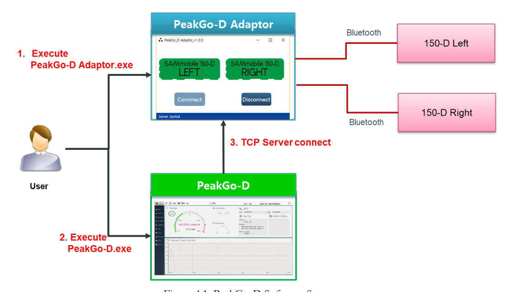
PeakGo-D Application SW GUI
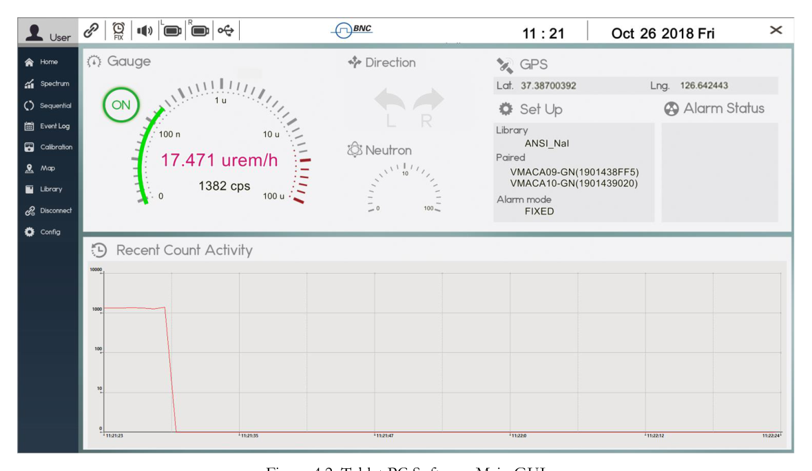
The Tablet PC communicates with the PeakGo-D Adaptor through the TCP/IP network protocol. Its main function is to provide dose (and count) rate data for gamma-ray energy. Also, it provides the operator with a convenient graphic status display and access to the analytical tools. It also manages the configuration and calibration of the paired SAMmobile 150-D unit(s).
The SW is Windows OS based and compatible with any Windows-based Tablet PCs. The standard unit provided with the SAMmobile 150-D is the Samsung Tablet PC. The software permits Bluetooth networking only between a Tablet PC and SAMmobile 150-D units; this avoids potential data collision issues with any other Bluetooth devices in the area. The latest software can be downloaded from http://bncsam.com/PeakGo-D.html.
Installation and Uninstallation Guide
Installation
Download the latest software from http://bncsam.com/PeakGo-D.html by following these steps.
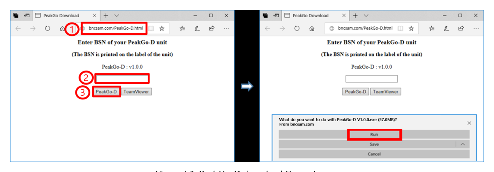
- Connect to
http://bncsam.com/PeakGo-D.html. - Enter password (the factory saved password is the serial number of the unit. One may find the serial number on the label).
- Click "Download."
- Click "Run" to proceed.
- Follow the installation steps below.
To install the Tablet PC application software to the Tablet PC, please follow the easy steps below.
- Download or copy the "PeakGo-D" Setup program from the installation USB drive provided with the unit.
- Double click the "PeakGo-D Setup" file (refer to Figure 4.4 below).
- Follow the easy steps in Figure 4.4 to install "PeakGo-D" to the Tablet PC.
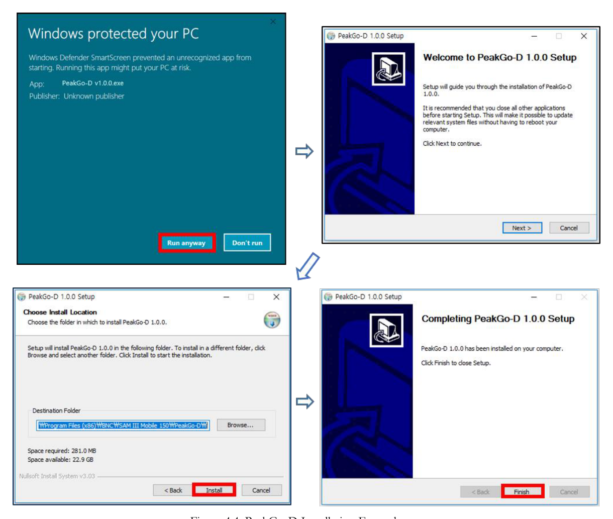
Uninstallation
To uninstall the Tablet PC application software from the Tablet PC, use Windows Control Panel – Programs – Uninstall a program.
- Select "PeakGo-D."
- Uninstall "PeakGo-D" (refer to Figure 4.5).
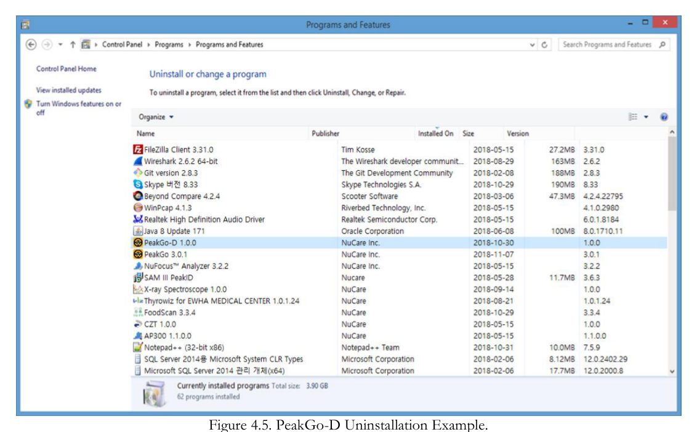
General GUI and Menus
PeakGo-D Adaptor
PeakGo-D Adaptor provides connect and disconnect functions between SAMmobile 150-D and PeakGo-D application software. Follow the instructions below to manage the adaptor.
To start PeakGo-D Adaptor: Double-click the executable file, and both SAMmobile 150-D (left and right units) are connected automatically via TCP/IP protocol. Figure 4.6 shows when the connection is completed. The color of both left and right SAMmobile 150-D icons turn to green.
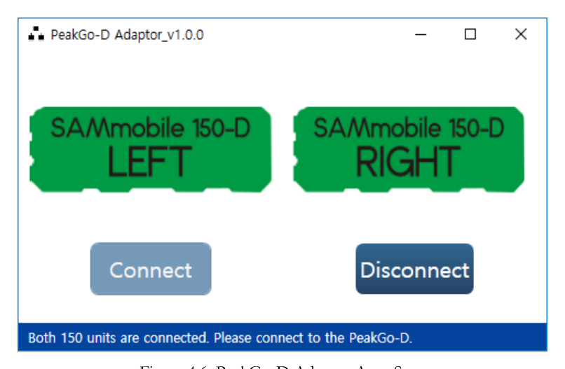
Re-connect PeakGo-D Adaptor: If at least one SAMmobile 150-D unit is disconnected, a connection failure message pop-up appears on the PeakGo-D software as shown in Figure 4.7.
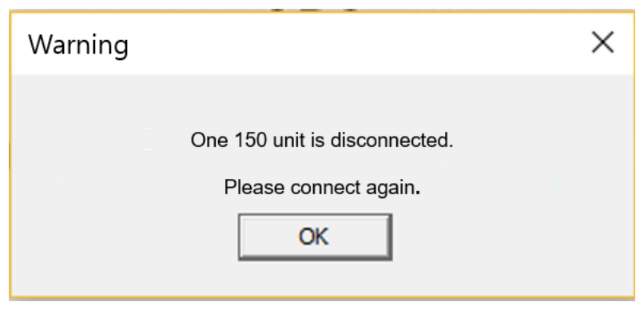
Click the OK button and the adaptor SW window appears as shown in Figure 4.8.
- Click the Connect button.
- Click the network connection icon on the PeakGo-D.
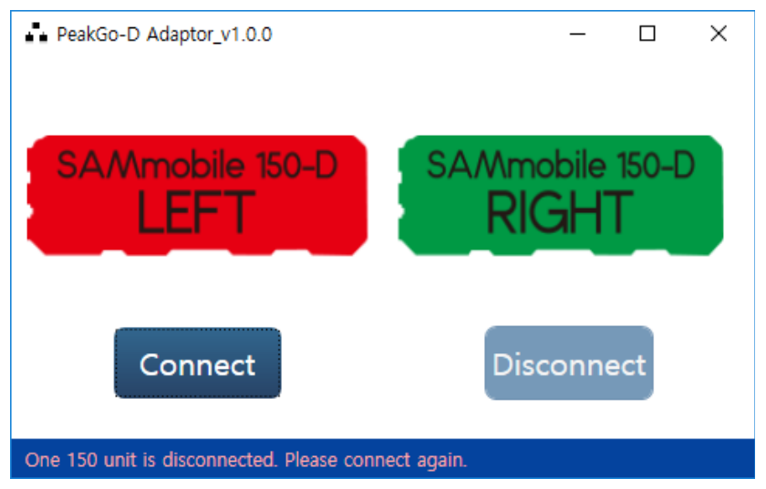
PeakGo-D main GUI
Measurement status, visual display, spectrum analysis, background measurement, configuration, and calibration are all managed by the Tablet PC and its application software. Figure 4.9 shows the opening page of the "PeakGo-D" GUI software. The top bar contains Short-Cut Icons and Time and Date. The left side of the primary GUI is assigned for the main Menu. The top half of the Main Screen is assigned for graphical display of dose rate, SAMmobile 150-D monitoring status, GPS data, current configuration data, and alarm status. The bottom half of the Main Screen is a graphical display (histogram) of recent activity in real-time.
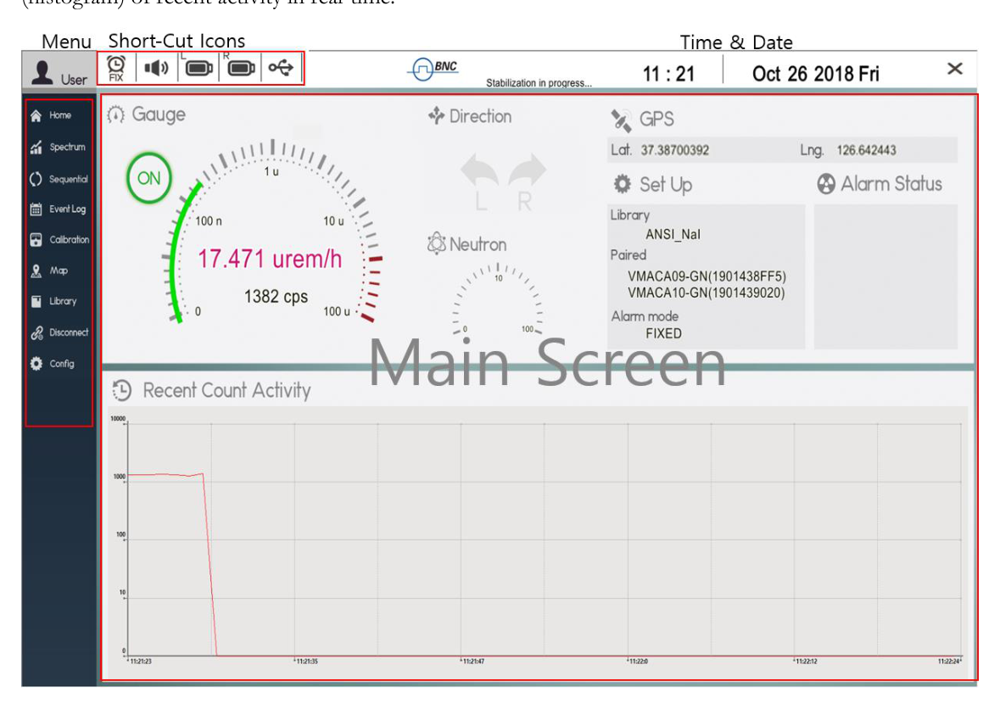
Home Screen
The Home screen and its components are shown in Figure 4.10. Details are provided in the following sections.
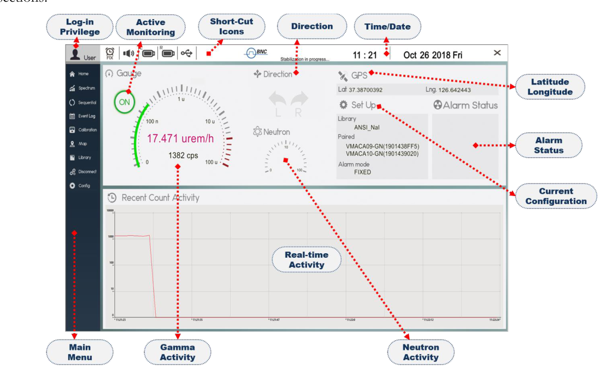
| Element | Function |
|---|---|
| Main Menu | Allows the operator to choose among corresponding processing screens. |
| Short-Cut Icons | Groups frequently used functions. |
| Log-in Privilege | Displays Log-in status: either Admin or User. |
| Active Monitoring | Displays monitoring status. Allows operator to turn Gauge on/off. |
| Date/Time | Displays the current date and time information. |
| Direction | The direction of detected gamma radiation (Left or Right). |
| GPS | Displays latitude and longitude of the 150-D location. |
| Set Up | Displays current configuration of Library, Paired 150-D, and Alarm mode. |
| Alarm Status | Displays graphical, color-coded icon for alarm status. |
| Neutron | Displays neutron rate in counts per second. |
| Gauge | Displays gamma dose rate and count rate. |
| Recent Count Activity | Displays a histogram to represent gamma activity in real-time that can alert you to a momentary increase in activity faster than the rapidly changing gauge numbers. |
Spectrum Screen
Figure 4.11 shows the Spectrum screen analysis features. A spectrum of detected isotopes is displayed on the top half of the screen while qualitative analysis and isotope ID summary are displayed on the bottom half of the screen.
By selecting from the Configuration menu, isotope identification can be initiated automatically or manually. "Manual ID" functions are shown in Figure 4.11. Measurement time can be extended/reduced in increments of 30 seconds by pressing the left or right button at the bottom of the screen. ID results are shown as a bar graph with qualitative information and color-coded into 5 different classifications. The Information window shows a list of identified isotopes with corresponding confidence levels.
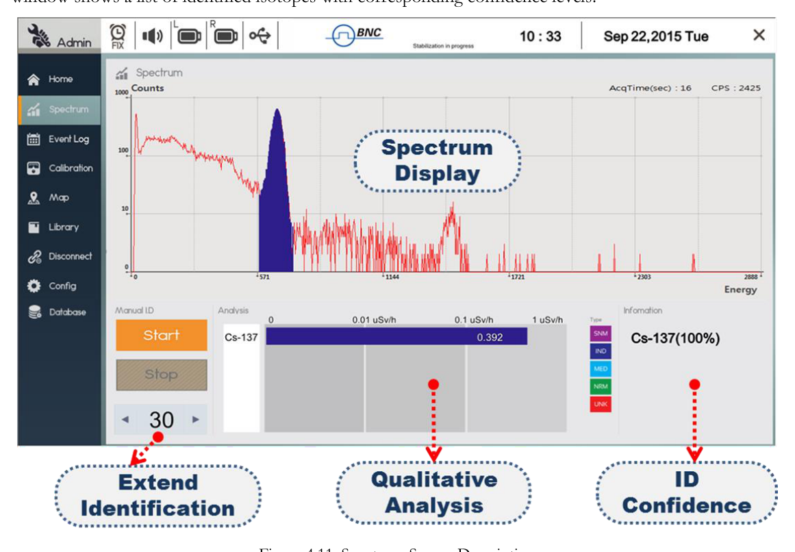
| Element | Function |
|---|---|
| Spectrum | Spectrum is displayed in the top half of the screen. Live acquisition time and count rate information are displayed at the top of the graph. |
| Manual ID | The bottom left corner has Manual ID Start/Stop button. Measurement time can be extended or reduced by increments of 30 seconds. |
| Analysis | Further analysis of individually identified isotopes is graphically displayed. |
| Information | Identified isotopes are summarized with statistical confidence. |
Sequential Mode
The Sequential Mode provides multiple measurements of events sequentially and automatically.
- Select "Sequential" from the menu and the "Sequential mode" configuration pop-up window appears as shown in Figure 4.12.
- Type in Measurement Time, Pause Time and Number of Measurements (repetition).
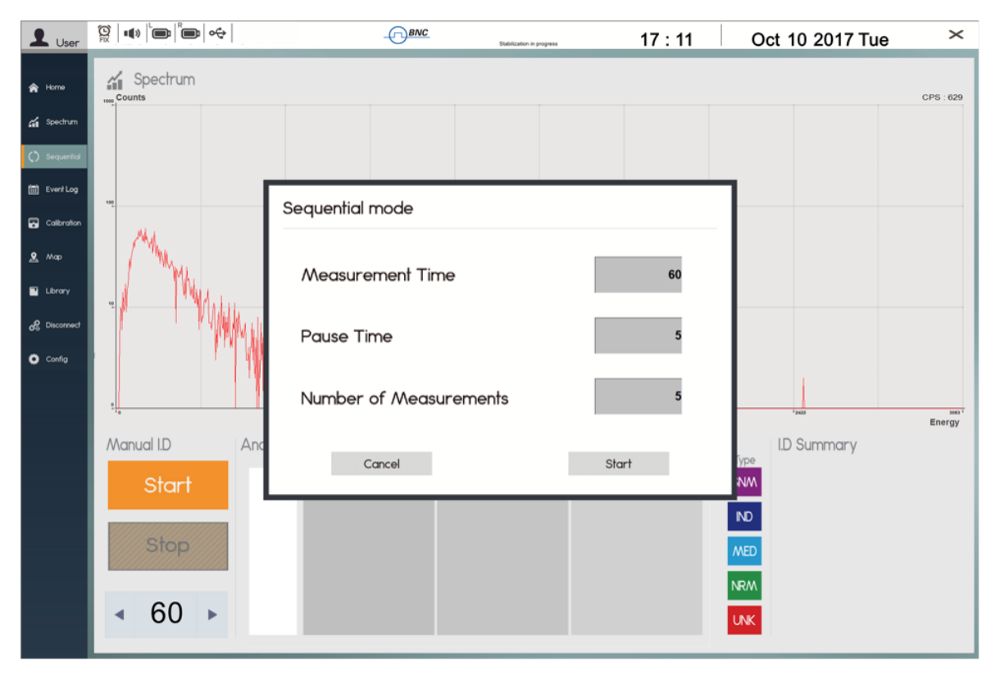
Event Log Screen
Figure 4.13 shows the Event Log screen. Events are grouped in the database (DB) by date. To retrieve a saved event, first select from Event by Date. Next, select the event by number or by time stamp from the Event Log list as shown in Figure 4.13.
Each event contains a spectrum, general information, analysis results, photos/videos, and map information. The information is accessed by selecting the corresponding tab on the Event Menu Bar in Figure 4.13.
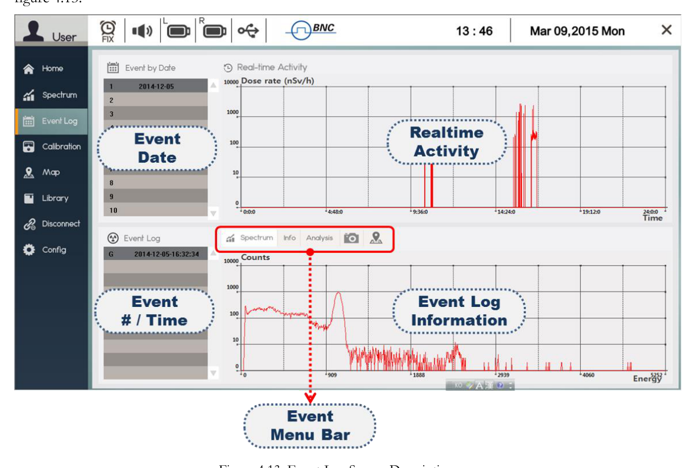
| Element | Function |
|---|---|
| Event by Date | Displays saved events in the database (DB) by date. |
| Event List | Displays saved events on the selected date by event number and/or event time. |
| Realtime Activity | Displays a histogram of real-time activity on the selected date. |
| Event Information | Displays saved information grouped by tabs on the Event Menu Bar. |
Calibration Screen
The Calibration screen consists of a spectrum display window, a calibration/background measurement menu, and a calibration/background procedure window as shown in Figure 4.14. Calibration or background measurement is initiated by clicking the corresponding button located in the left bottom corner as shown in Figure 4.14. Measurement parameters are pre-selected and may be adjusted within the Configuration menu.
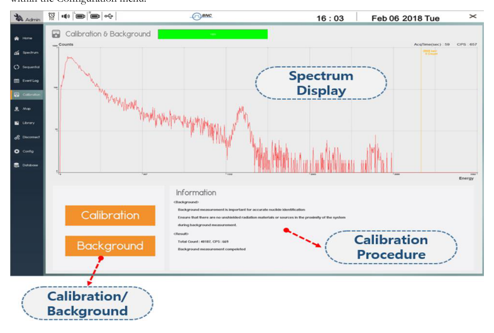
| Element | Function |
|---|---|
| Calibration & Background | Displays spectrum of calibration or background during measurement. |
| Calibration/Background | Menu buttons to begin calibration or background measurement. |
| Information | Displays calibration and background measurement procedures and results. |
Map Screen
If the PC/Tablet is within range of an internet-enabled network, the Map screen displays an area map of the current SAMmobile 150-D location based on GPS information from the Tablet PC. Google Maps provides the area map. The radiation activity detected by the SAMmobile 150-D at the current latitude and longitude is displayed on the map.
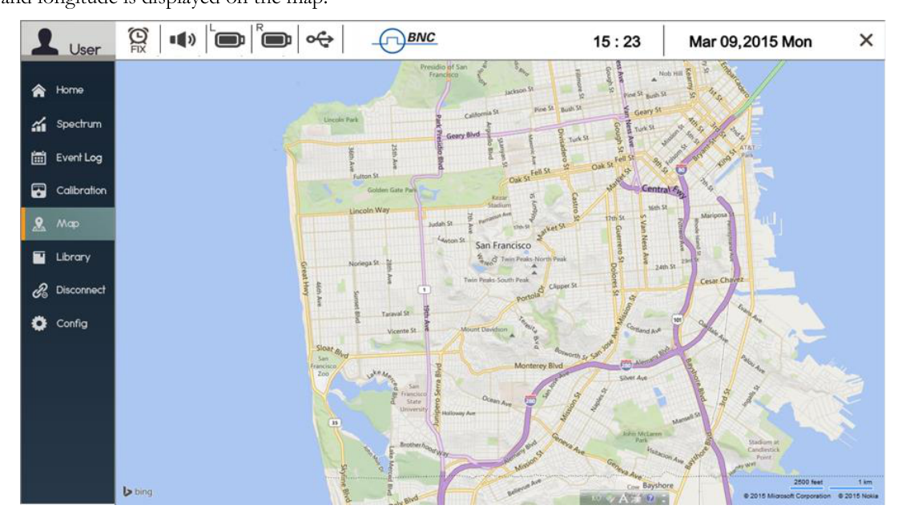
Library Screen
The Library screen allows the operator to select and read the contents of the library of isotopes. The Library screen consists of three windows, i.e., Library List, Isotope List, and Library Editor as shown in Figure 4.16.
The Library List contains the names of standard and/or custom isotope libraries that are used by the SAMmobile 150-D for identification of nuclides. The operator can select/delete a library by using the button below the window. The middle window lists the isotopes that belong to the selected library. In extremely rare cases, the isotopes can be added, deleted, or changed in the Library Editor by using a factory authorized password.
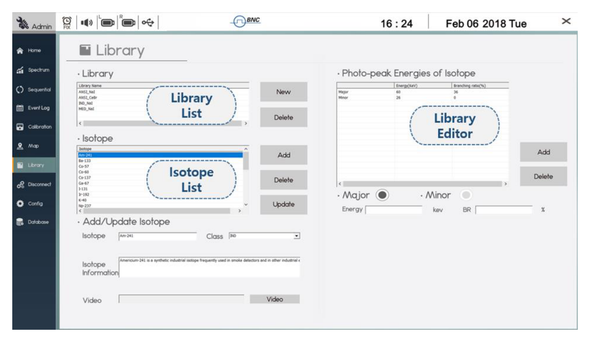
| Element | Function |
|---|---|
| Library List | Lists available libraries used by the 150-D for isotope identification. |
| Isotope List | Lists isotopes that belong to the selected library. |
| Library Editor | Isotopes can be added/deleted using the edit window (password protected). |
Configuration Screen
The Configuration screen (Config) contains a menu of selectable parameters that define User Name/Search Location, Gain Stabilization setup, Background Measurement Time, Calibration Count, Library, Dose Rate Unit, and Alarm setup.
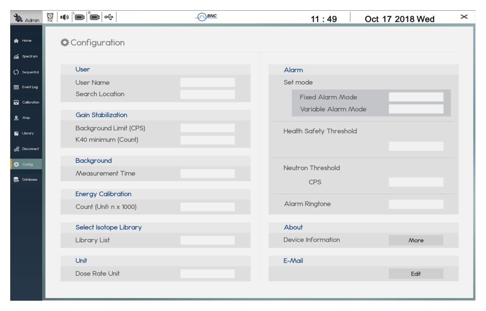
Database Screen
The Database menu provides a feature of open/backup/extract event logs from storage. The function of each Database submenu is described in the table below Figure 4.18.
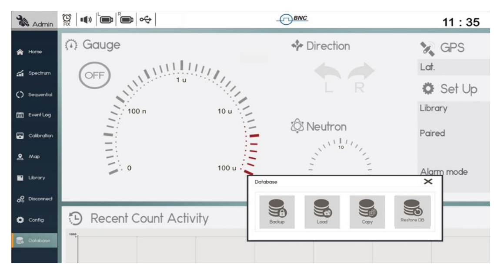
| Submenu | Function |
|---|---|
| Backup | Backup the current Event DB to a storage location on the Tablet PC, and delete the current DB from the Event Log screen. |
| Load | Open an Event DB in the Event Log screen from a storage location on the Tablet PC. |
| Copy | Backup the current Event DB to the storage location without deleting from the Event Log screen. |
| Restore DB | Backup an opened Event DB to the storage location and restore the previously current DB to the Event Log screen. |
Spectrum Manipulation
Zoom In/Out
The operator can "zoom in" on the spectrum by double-clicking (or double tapping) the area of interest. By double-clicking (or double tapping) on the graph area again, the normal scale is restored.
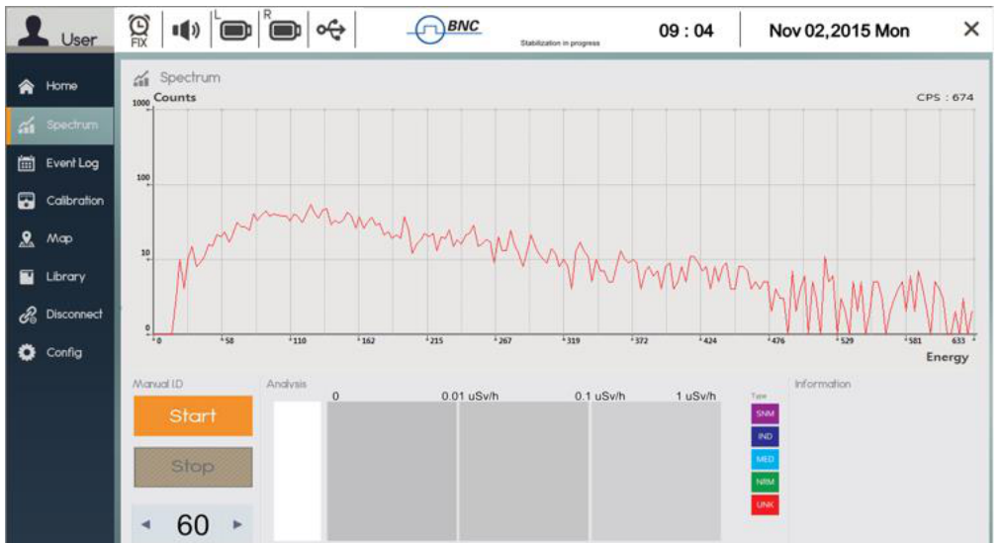
Moveable Reference Line
By clicking or touching the x-axis, the operator can initiate a moveable cursor at the touched position that displays energy and a count value for that energy. The vertical, yellow reference line can be moved to any location on the energy axis by dragging horizontally along the x-axis.
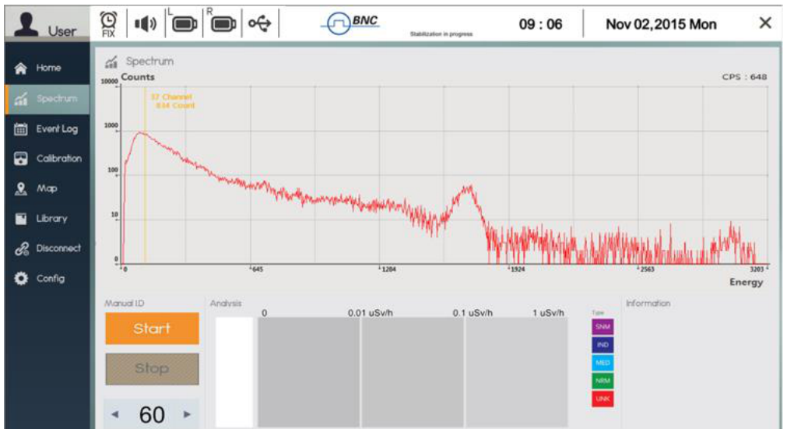
The count range and maximum count value automatically adjust to accommodate the channel with the highest count.
4Step by Step Operation Instructions
Step 1. Prepare the SAMmobile 150-D for operation
- Turn power ON (both 150-D units and the Tablet PC).
- From the Tablet PC, touch the SAM III PeakGo-D icon.
Step 2. Log In
- Log in as User or Administrator (password protected).
A User operator has restricted access to information and setup menus. The factory default password for Administrator log-in is '1234'. To change the password, go to the Configuration menu - Config/About/Device Information/More/Password edit - as shown in Figure 4.22.
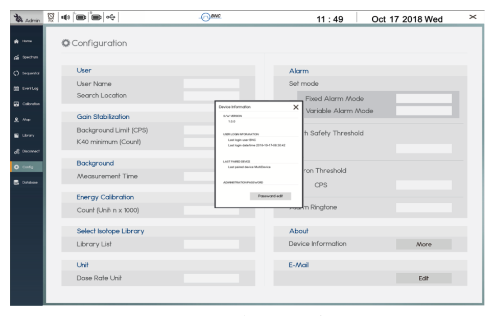
Step 3. Establish Bluetooth connection between Tablet PC and 150-D
- Execute PeakGo-D Adaptor.exe.
- Click the 'Connect' button on the PeakGo-D Adaptor.
- Click the 'network connection' icon on the short-cut icon menu bar.
- Turn Active Monitoring ON.
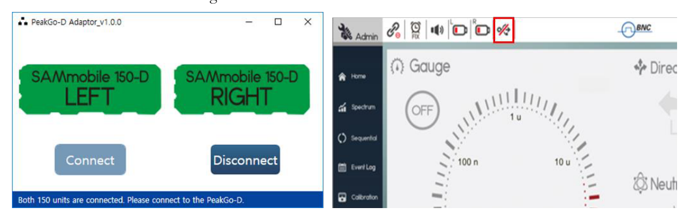
The BT address of the 150-D system is a unique 12-digit code. The 12-digit code and Serial number are found on the label located on the side of the 150-D carrying case (Figure 4.24).
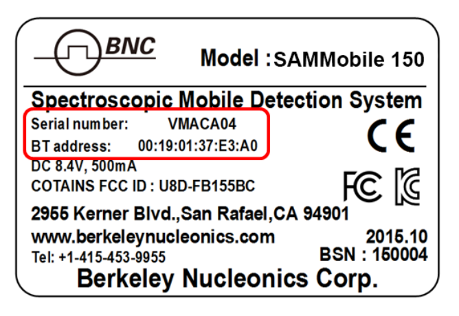
Step 4. Config: User Name and Search Location
- Click the "Config" menu from the main Menu bar.
- Type in "User Name" and "Search Location."
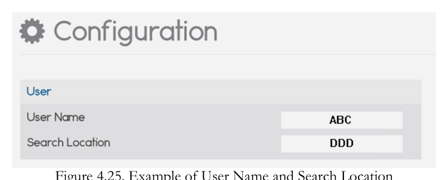
Step 5. Config: Alarm Threshold
PeakGo provides two modes for triggering the SAMmobile 150-D alarm. Both are described in the following table.
| Mode | Description |
|---|---|
| Fixed Alarm Threshold | This basic method assumes that the background is very stable and exhibits a very small amount of fluctuation. The alarm turns ON when the count rate exceeds the selectable Fixed Alarm threshold value. This method can cause false alarms if the NORM background fluctuates substantially (often the case when the SAMmobile 150-D is moving across a large area while actively monitoring). |
| Variable Alarm Threshold | This advanced method continuously samples the previous 10 seconds worth of background fluctuation and continuously calculates the standard deviation (σ or sigma) of the fluctuation. The alarm turns ON when the sigma of the fluctuating background exceeds the sigma of the Variable Alarm threshold value. This method is recommended when the system is moving across a large area while actively monitoring (and therefore, subject to fluctuating background). |
- Select Config / Alarm / Set mode (see Figure 4.26).
- Select either "Fixed Alarm Mode" or "Variable Alarm Mode."
- For "Fixed Alarm Mode," select a count rate value from the menu, OR
- For "Variable Alarm Mode," select a standard deviation (sigma) value from the menu.
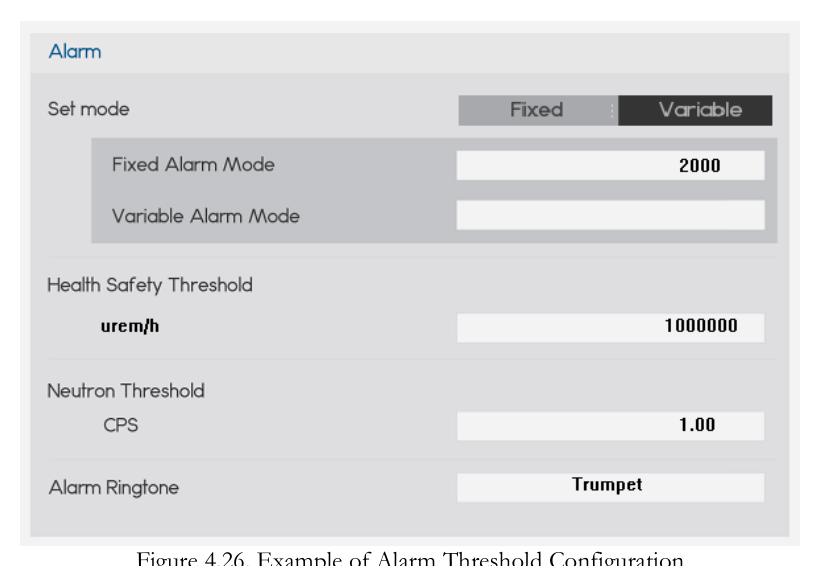
Step 6. Config: Alarm Ringtone
The SAMmobile 150-D provides six alarm ringtone options as shown in Figure 4.27 below.
- Select 'Alarm Ringtone' in the Config screen (refer to Figure 4.26).
- Select desired alarm ringtone.
- Apply the ringtone.
Step 7. Config: Gain Stabilization Setup
The SAMmobile 150-D provides Gain Stabilization Setup as shown in Figure 4.28 below.
| Parameter | Description |
|---|---|
| Background Limit (CPS) | If the background contains active source(s), then gain stabilization has to be stopped and postponed until background level returns to normal level. The 'Background Limit' parameter determines the threshold value of 'active source presence' in the CPS unit. |
| K40 minimum (Count) | To conduct gain stabilization, a minimum number of K-40 counts are required. The 'K40 minimum' parameter determines the lowest threshold value of K40 counts for successful gain stabilization. |
Step 8. Background Measurement
Reliable background information is critical for good isotope identification and alarm performance. The software employs an advanced "NORM Rejection Algorithm" to reduce false alarms due to the fluctuations in the naturally occurring background. Appropriate background measurement and system calibration of the SAMmobile 150-D will ensure the best possible results. Background Measurement and Manual Calibration are accessed by clicking on the Calibration menu.
- Click the "Home" menu on the main menu bar.
- Turn off Gauge in the Home Screen.
- Click the "Calibration" menu on the main menu bar.
- Select "Background."
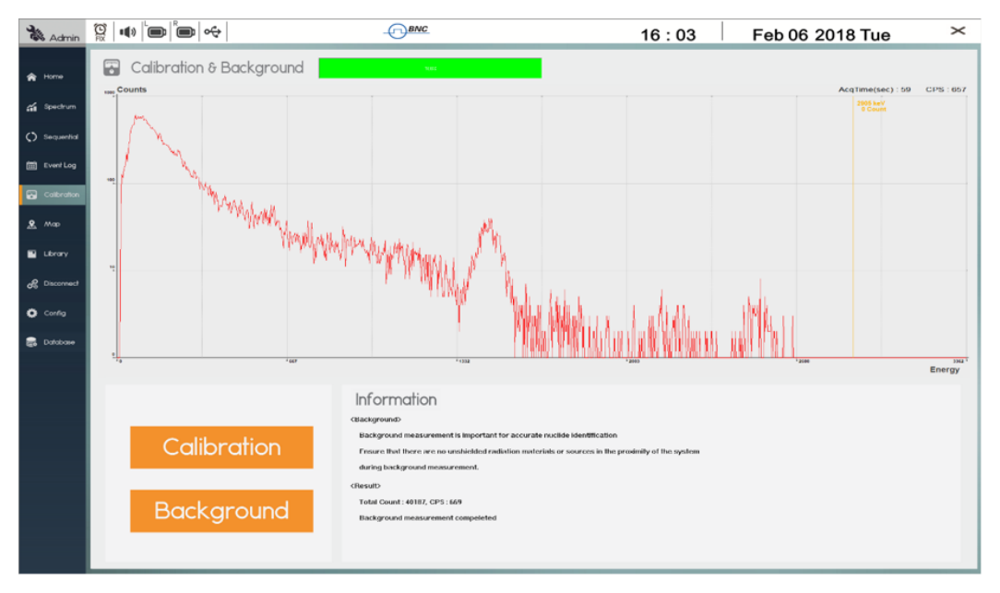
The background spectrum is automatically updated during the measurement. The background measurement time is defined in the "Config" menu.
Step 9. Calibration
- Click the "Home" menu on the main menu bar.
- Turn off Gauge in the Home screen.
- Place a Cs-137 source on the detector center mark on the top of the SAMmobile 150-D (shown in Figure 4.30).
- Click the "Calibration" menu on the main menu bar.
- Select "Calibration."
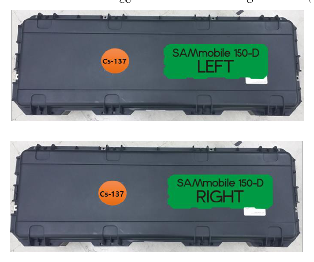
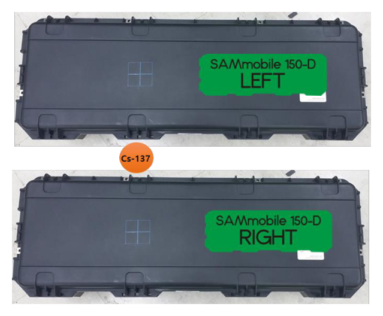
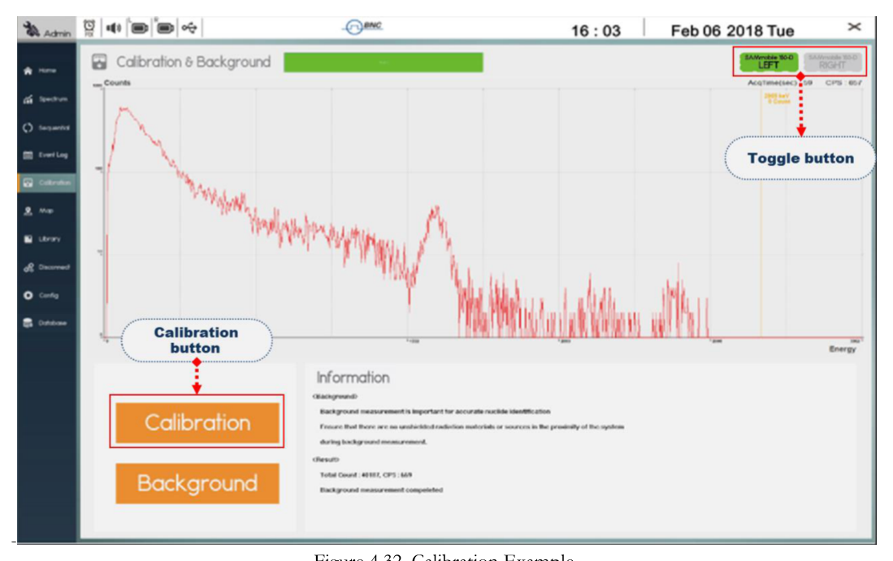
Step 10. Radiation Monitoring
Now the SAMmobile 150-D is ready for operation.
- Turn on "Gauge" in the Home screen.
- Gamma activity is displayed in both dose-rate (uSv/h or rem/h) and count rate (cps) units.
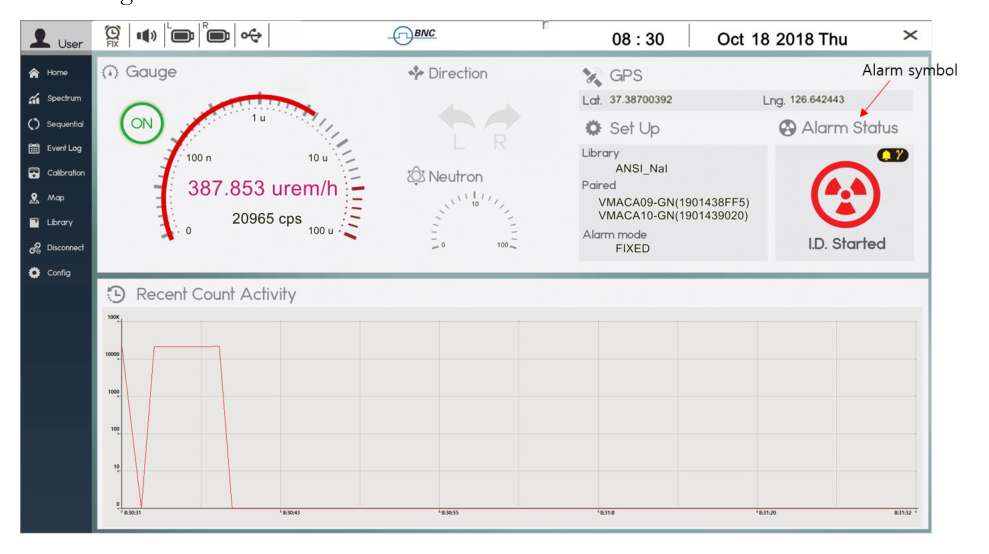
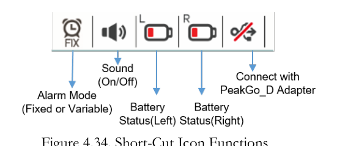
| Icon | Function |
|---|---|
| Alarm Mode | Alarm Mode icon shows either FIX or VAR. |
| Bluetooth Search | Search for Bluetooth paired 150-D devices. |
| Sound | Alarm sound on/off. |
| Battery Status (Left) | Battery status of Left 150-D. |
| Battery Status (Right) | Battery status of Right 150-D. |
| Network connection | Connection status between PeakGo-D and 150-D units. |
Gamma activity units are shown as uSv/h or urem/h (default). The Recent Count Activity graph is logarithmic and auto-scaling. Several methods have been proposed for the calculation of dose rate using spectral data provided by a NaI(Tl) detector. The SAMmobile 150-D employs a method defined by Kwon et al. [1].
Step 11. Alarm & Isotope Identification
If the count rate rises above background (defined by the selected Alarm Mode and Threshold), the system automatically initiates Alarm Mode. When the SAMmobile 150-D alarms, the alarm symbol appears in red (as shown in Figure 4.33) and the Alarm Ringtone is activated. Nuclide identification is automatically started. Switching to the "Spectrum" menu will display the nuclide identification data. In this screen, the gathering spectral data, identified isotopes, and statistical confidence levels are displayed as shown in Figure 4.35. If the count rate decreases below the Alarm Mode threshold, the alarm symbol and audible warning turn off.
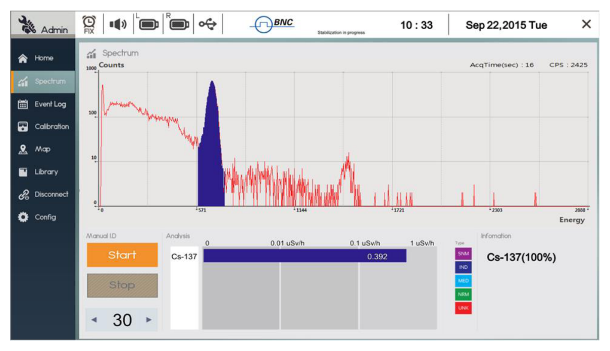
The required nuclides must be included in the selected radionuclide library. If multiple isotopes are identified, SAM III PeakGo-D will place the most significant isotope (highest contributing dose rate) as the top-most bar, and the remaining isotopes in descending order to the least significant isotope (lowest contributing dose rate). Each bar will be named and displayed with the corresponding classification color as shown in Figure 4.35.
| Element | Function |
|---|---|
| Spectrum | Real-time spectrum display with Date/Time, Acq. Time and gamma count rate information. |
| Counts | Y-axis units (counts in self-adjusting, logarithmic scale). |
| Energy | X-axis units (energy in keV displayed on a linear scale). |
| Analysis | Isotope ID, dose rate, and classification of individual isotope(s). |
| Class of identified isotope |
|
| Information | Statistical confidence of each identification. |
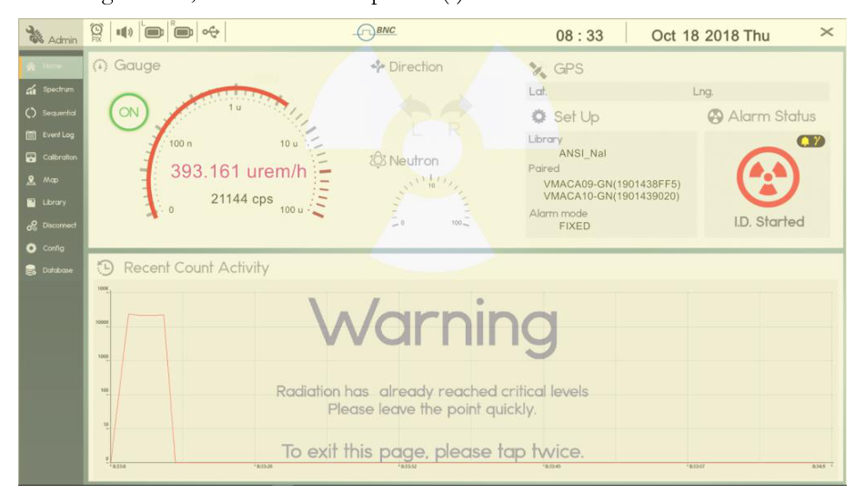
Step 12. Manual Identification
Even when Alarm Mode is in progress, an Identification Event may be performed manually.
- Touch Start in the Manual ID field and an Event Spectrum will begin immediately.
- The default capture time for Manual Identification is 60 seconds. You may extend or reduce the capture time by touching the left or right buttons respectively. Time is extended or reduced in increments of 30 seconds.
- When the capture time has elapsed, event information is automatically saved to the Event Log file. You may touch Stop to cancel the capture at any time.
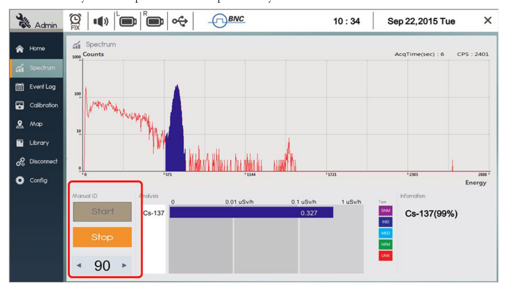
Step 13. Open Saved Event
The Event Log associated with a Manual ID is automatically generated and saved in the Tablet PC. Analysis of the spectra for saved events can be performed by the following steps.
- Turn off Gauge in the "Home" screen.
- Click "Event Log" on the main Menu bar.
- Select the "Event by Date" menu.
- Select the event by number or by time stamp from the "Event List" menu.
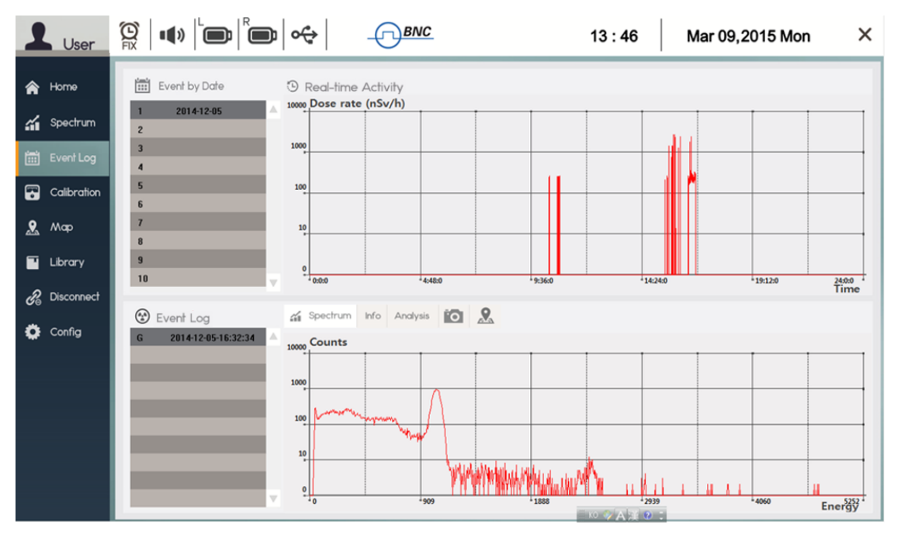
Step 14. Event Analysis
An event spectrum and its associated information can be displayed by selecting the event from the Event Log list. The Event Log screen appears as shown in Figure 4.39. The Event Log screen contains 5 tabs: Spectrum, Info, Analysis, Photo, and Map.
Spectrum
Spectrum manipulation techniques described in Figures 4.19 and 4.20 apply to the event analysis screen.
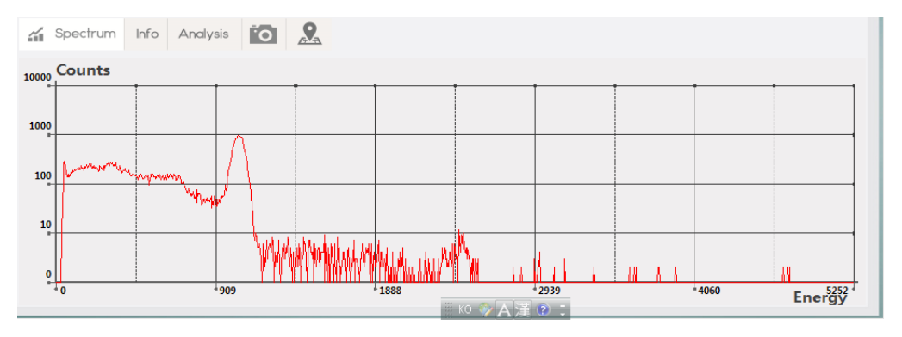
Info
The Info tab contains alarm date/time, user, dose rate information, and comments. Adding a comment is described in Step 15: Add Comments and Photo/Video.
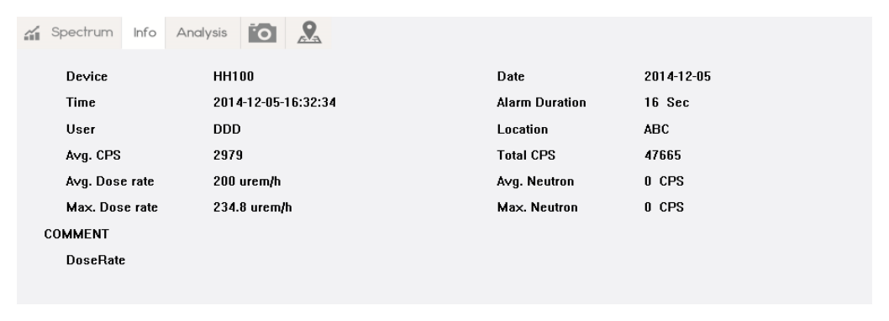
Analysis
In the Analysis tab, the measured dose rate of identified isotopes is graphically displayed in a horizontally oriented bar graph. If multiple isotopes are identified, SAM III PeakGo-D will place the most significant isotope (highest contributing dose rate) as the top-most bar, and the remaining isotopes in descending order to the least significant isotope (lowest contributing dose rate). Each bar will be named and displayed with the corresponding classification color, and with the statistical confidence of each identification as shown in Figure 4.41.
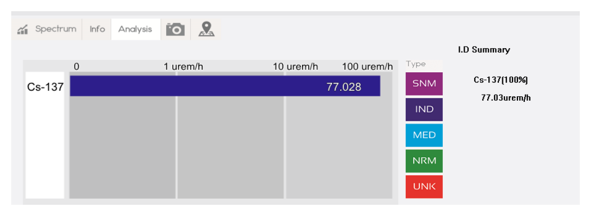
Photo/Video
In the Photo/Video Tab, information in image form can be saved and attached to each event. Adding photo/video is described in Step 15.
Map
If the PC/Tablet is within range of an internet-enabled network, each event will contain GPS information from which a radiation map can be generated using that information. The Map tab displays an area map of the event location along with dose rate information.
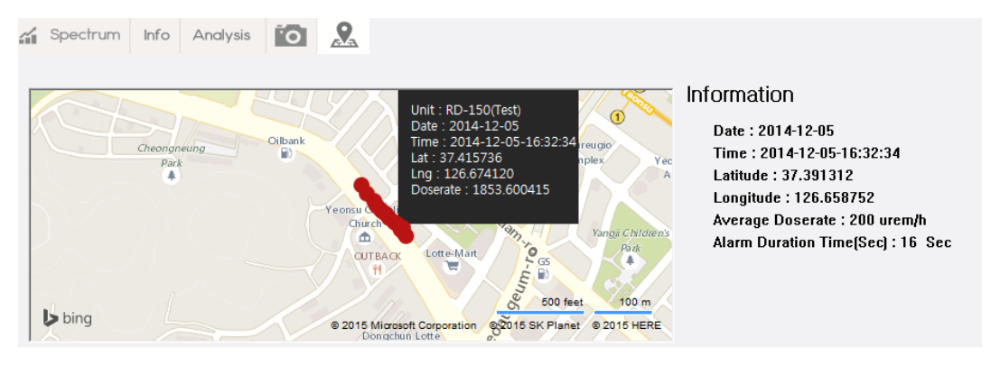
Step 15. Add Comments and Photo/Video
Comments and/or images may be attached to the opened event. The "Attach Comment" procedure is shown in Figure 4.44.
- Click the "Info" tab.
- Touch the comment area. The keypad and typing window screen will appear.
- Type comments into the field and touch the "Apply" button.
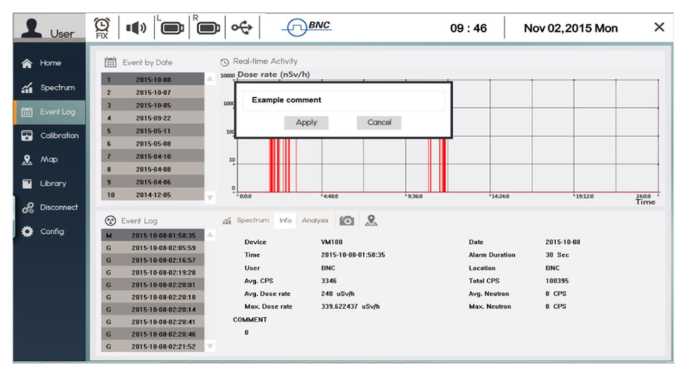
The "Attach Photo/Video" procedure is shown in Figure 4.45.
- Touch the Photo/Video tab.
- Touch the "NEW MEDIA" bar. The Photo / Video application will open.
- Capture photo or video images. They are automatically saved when image capture is completed.
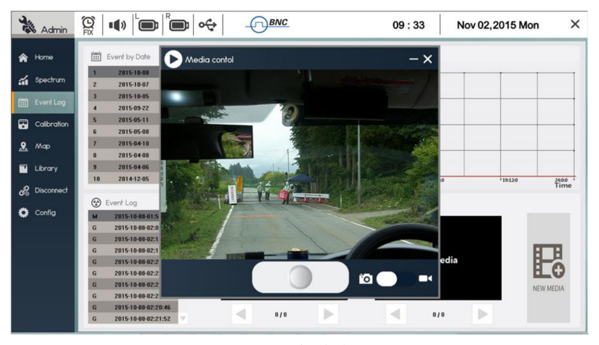
4Auto-Calibration and Stabilization
The Auto Calibration and the Stabilization features adjust the calibration parameters of the system to correct for any drift caused by environmental changes (generally ambient temperature). Auto Calibration is executed automatically when the Bluetooth pairing of the SAMmobile 150-D and the Tablet/PC is successful. If the operator chooses to cancel the Auto Calibration, it can be stopped by touching the 'Cancel' button. Stabilization is automatically executed every 5 minutes unless the unit is in Alarm Mode.
When Auto Calibration and Stabilization are executed, the system automatically adjusts its gain using the 1.4 MeV energy peak generated by the K-40 radionuclide of naturally occurring potassium found nearby in the local environment. A calibration source is not needed. The stopping criteria for this automatic feature are the integrated counts in the K-40 peak. The total Energy Calibration count is defined in the 'Config' menu. Typically 100,000 counts are recommended to ensure that the K-40 stabilization peak is well defined. Supplemental Potassium Chloride (KCL) salt can be used to assist the Stabilization if necessary.
Typically, when Bluetooth pairing between the SAMmobile 150-D and the Tablet/PC is complete, PeakGo-D will immediately perform Auto Calibration. It is advisable to wait for Auto Calibration to complete (100%) before proceeding further. If the system has been calibrated manually recently, then the operator may cancel before completion.
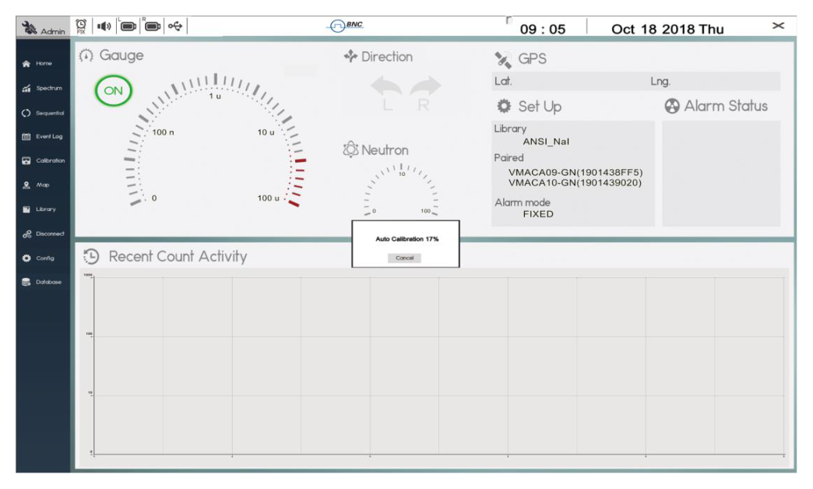
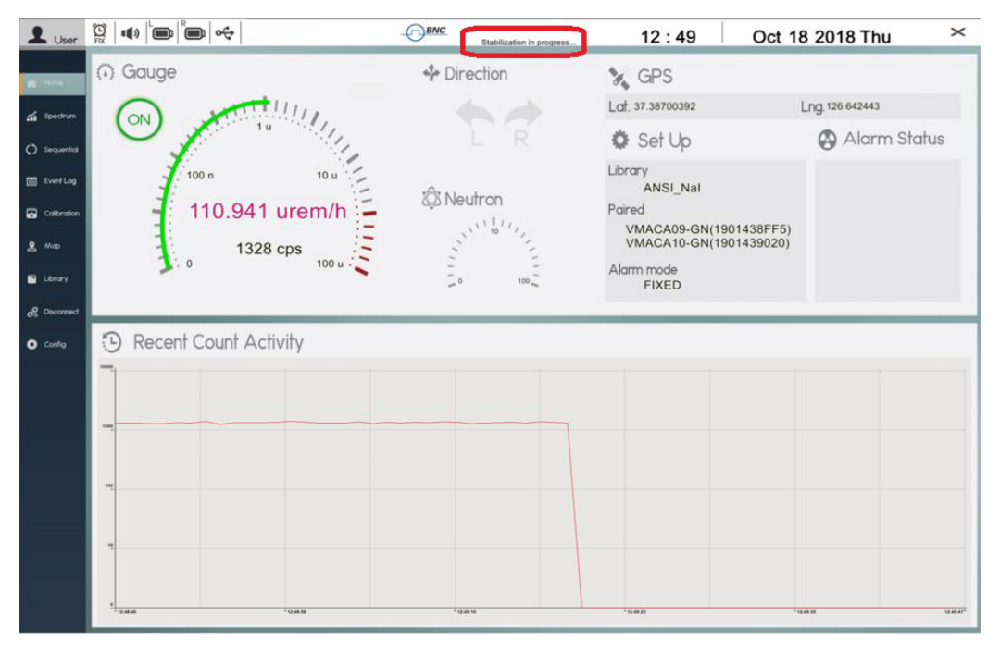
5Reminder and Useful Tips
- Do not open the cover. The servicing of the unit should only be handled by trained personnel authorized by Berkeley Nucleonics Corp.
- Turn off unnecessary PC applications to optimize the performance of the Tablet PC, and to optimize communication and operation of the SAMmobile 150-D.
- Be familiar with the Tablet PC and Windows operation. Please refer to the Samsung Tablet PC user manual.
References
[1] Calculation of Neutron and Gamma-Ray Flux-to-Dose-Rate Conversion Factors, S. Kwon, K. Kim, C. Ha, S. Moon, and C. Yook, Journal of the Korean Nuclear Society, Vol. 12, No. 3, September 1980.
AAppendix. SAMmobile 150-D Specification
Input/Output
| Parameter | Specification |
|---|---|
| USB | Micro USB 2.0 |
| Bluetooth | Class 2.0, max 100 m range (class 2) |
| GPS | Built-in GPS in a Tablet PC or Smartphone |
Physical
| Parameter | Specification |
|---|---|
| Dimensions (W x D x H) | 84 x 62 x 41 (cm): VM100-D-2G2 or VM100-D-4G2 model. 108 x 34 x 30 (cm): VM100-D-2G1 or VM100-D-4G1 model. |
| Weight | 25 kg (49 lb) VM100-D-2G1 model |
Environmental
| Parameter | Specification |
|---|---|
| Operating Temperature | 5 to 122 F (-15 to 50 C) |
| Relative Humidity | 10 to 80%, noncondensing |
| Protection Rating | IP 65 (according to IEC 60529) |
Performance
| Parameter | Specification |
|---|---|
| Energy Resolution (Gamma) | NaI(Tl) 2x4x16 inch: > 8% @ 662 keV |
| Energy Range (Gamma) | 20 keV – 3 MeV |
| Throughput | > 150 kcps |
| MCA channel | 10 bit 1024 channel |
| Dose rate range (NaI) | 0 – 10 mR/h |
| Dose rate range (GM) | 10 mR/h – 10 R/h (optional) |
| Stabilization | Automatic real-time stabilization using K-40 |
| Nuclide Identification | According to ANSI N42.34, isotope/category/confidence report |
| Battery | > 8 hours, Lithium Ion |
Detectors
| Parameter | Specification |
|---|---|
| Gamma NaI(Tl) | 2x4x16 inch – Standard, 4x4x16 inch – optional, up to 2 detectors/unit |
| Gamma (High Dose Rate) | Geiger-Muller detector (Optional) |
| Neutron (optional) | Solid-state Neutron detector: 4 cm² active area, 30% thermal neutron eff. Gamma rejection: 1:107. He-3: 27 cps/nv sensitivity. |
Display
| Parameter | Specification |
|---|---|
| Smartphone | Samsung Galaxy Player or equivalent |
| Tablet PC | Any Windows compatible tablet PC |
Software
| Parameter | Specification |
|---|---|
| Application SW | Android-based application SW for Smartphone (SAM III PeakAbout-D). Windows-based application SW for Tablet PC (SAM III PeakGo-D). |
| Reach-back Feature | ANSI N42.42 event data via a Tablet PC or Smartphone |
✉Contact Us
Berkeley Nucleonics Corporation
2955 Kerner Blvd., San Rafael, CA 94901
Phone: (415) 453-9955
Email: info@berkeleynucleonics.com
Web: www.berkeleynucleonics.com
SAMmobile RD-150 User Manual · Document Version Number: 1.2 · Print Code: 91021080